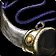
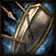
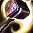
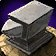

Leveling 1-60
Tap a level to open it. Check it off and it collapses. Levels 1-30 match the beta; 31-60 is mostly unannounced.
- New Devotion Aura
- New Holy Light
- New Seal of Righteousness
- Start in Northshire Abbey, Elwynn Forest. Seal of Righteousness + auto-attack.
- New Blessing of Might
- New Judgement
- Pick up Mining at a trainer; Blacksmithing in Goldshire/Stormwind. Cooking + First Aid too.
- New Divine Protection
- New
 Holy Strike New in Forever
Holy Strike New in Forever - New Seal of the Crusader
- R2 Holy Light
- Holy Strike unlocked — press it on cooldown when you have mana. [Icy Veins]
- New Hammer of Justice
- New Purify
- New
 Blessing of Protection
Blessing of Protection - New
 Lay on Hands
Lay on Hands - New Seal of Fury New in Forever
- R2 Devotion Aura
- R2 Seal of Righteousness
- Talents open. Head toward Westfall / Loch Modan.
- Seal of Fury learned: wear a one-hander + shield (its absorb needs a shield). [WoW Forever DB]
- New
 Redemption
Redemption - R2 Blessing of Might
- R2 Holy Strike New in Forever
- R2 Seal of the Crusader
- New Blessing of Wisdom
- R3 Holy Light
- New Retribution Aura
- New Righteous Fury
- New Blessing of Freedom
- R3 Seal of Righteousness
- R2 Divine Protection
- R2 Seal of Fury New in Forever
- New Blessing of Kings
- New Consecration
- New Exorcism
- New Flash of Light
- New Sense Undead
- New Seal of Command talent spell
- New

Voice of Truth New in Forever talent spell - R3 Devotion Aura
- R3 Holy Strike New in Forever
- Consecration — your first AoE. Mana-hungry: 2-3 mobs max solo. [Icy Veins]
- Prot: spend mana on Holy Strike and Flash of Light first; Consecration is pricey this early. [WoW Forever DB]

Redoubt 1/5- New
 Divine Favor talent spell
Divine Favor talent spell - New Swift Judgement New in Forever talent spell
- New Salvation
- New Revoke
- R4 Seal of Righteousness
- R2 Retribution Aura
- R2 Flash of Light
- R3 Seal of Fury New in Forever
- New Shadow Resistance Aura
- R4 Holy Strike New in Forever
- R2 Exorcism
- New Divine Intervention
- New Seal of Light
- New Holy Shock talent spell
- New
 Repentance talent spell
Repentance talent spell - New Templar's Bulwark New in Forever talent spell
- R4 Devotion Aura
- R5 Holy Light
- R2 Lay on Hands
- R2 Consecration
- R2 Seal of Command needs talent
- Beta cap. Check Merchant's Favor Blacksmithing recipes (Crusader's set). [Icy Veins]
- Shockadin (Holy Shock) build becomes possible — not our plan.
- New Divine Shield
- R5 Seal of Righteousness
- R4 Seal of Fury New in Forever
- R3 Blessing of Wisdom
- R3 Flash of Light
- New Fire Resistance Aura
- R5 Holy Strike New in Forever
- R3 Redemption
- R3 Retribution Aura
- R3 Exorcism
- New Blessing of Light
- New

Hammer of the Righteous New in Forever - New Summon Warhorse (Human, Dwarf)
- New Summon Warhorse New in Forever
- New Holy Shield talent spell
- New Light's Vigil New in Forever talent spell
- R5 Devotion Aura
- R3 Hammer of Justice
- R3 Consecration
- R3 Seal of Command needs talent
- R2 Shadow Resistance Aura
- R2 Holy Shock needs talent
- R2 Seal of Light
- Dual Specialization opens (Blizzard Paladin deep dive). Cost not published. Add Ret as your second spec (Alt: Ret tab).
- New Cleanse
- R6 Seal of Righteousness
- R5 Blessing of Might
- R5 Seal of the Crusader
- R5 Seal of Fury New in Forever
- R4 Flash of Light
- New
 Hammer of Wrath
Hammer of Wrath - R6 Holy Strike New in Forever
- R4 Blessing of Wisdom
- R4 Exorcism
- R2 Frost Resistance Aura
- R4 Redemption
- R3 Holy Shock needs talent
- R2 Fire Resistance Aura
- R2 Seal of Wisdom
- New
 Holy Wrath
Holy Wrath - R6 Devotion Aura
- R7 Seal of Righteousness
- R3 Lay on Hands
- R6 Seal of Fury New in Forever
- R4 Consecration
- R5 Flash of Light
- R4 Seal of Command needs talent
- R3 Seal of Light
- R2 Divine Shield
- R2 Blessing of Light
- R2 Holy Shield needs talent
- R2 Light's Vigil New in Forever needs talent
- New Greater Blessing of Might
- R6 Blessing of Might
- R7 Holy Strike New in Forever
- R6 Seal of the Crusader
- R5 Exorcism
- R3 Turn Undead
- R3 Shadow Resistance Aura
- R2 Hammer of Wrath
- New Greater Blessing of Wisdom
- R8 Holy Light
- R4 Hammer of Justice
- R5 Blessing of Wisdom
- R2
 Blessing of Sacrifice
Blessing of Sacrifice
- R5 Retribution Aura
- R4 Holy Shock needs talent
- R3 Frost Resistance Aura
- R8 Seal of Righteousness
- R7 Seal of Fury New in Forever
- R6 Flash of Light
- R3 Seal of Wisdom
- New Greater Blessing of Kings
- New Greater Blessing of Light
- New Mass Salvation
- New Summon Charger
- R7 Devotion Aura
- R9 Holy Light
- R7 Blessing of Might
- R8 Holy Strike New in Forever
- R5 Redemption
- R6 Blessing of Wisdom
- R5 Consecration
- R6 Exorcism
- R5 Seal of Command needs talent
- R4 Seal of Light
- R3 Fire Resistance Aura
- R3 Blessing of Light
- R3 Holy Shield needs talent
- R3 Light's Vigil New in Forever needs talent
- R3 Hammer of Wrath
- R2 Holy Wrath
- R2 Greater Blessing of Might
- R2 Greater Blessing of Wisdom
- Max level. Endgame gear/talents not published yet.
Alt spec: Retribution
Your main spec is Protection. This tab is your Ret dual spec (opens at 40, class trainer in a capital; Blizzard deep dive).
Talents to 30
Talent names match the Icy Veins "Retribution Focused" build (Benediction, Sanctified Judgement, Pursuit of Justice, Sacred Arbiter, Seal of Command,  Vengeance). Icy Veins also highlights Holy Conduit and Improved Judgement, which aren't in this plan. Icy Veins doesn't print a level-by-level order, so double-check it in their calculator. Icy Veins
Vengeance). Icy Veins also highlights Holy Conduit and Improved Judgement, which aren't in this plan. Icy Veins doesn't print a level-by-level order, so double-check it in their calculator. Icy Veins
Rotation
- Always keep a Seal up. Before 20: Seal of Righteousness. 20+: Seal of Command with a slow two-hander and no on-hit effect. SoR is still better with high Spell Power, a fast weapon, or "Strike of the Hydra" gear.Oct 15 build: Seal of Righteousness got about half as much from Spell Damage as before (a bug fix), so the Spell Power advice may be out of date.
- Judgement on cooldown. It does not use up your Seal in Forever.
- Holy Strike on cooldown (from level 6).
- Long fights: Seal of the Crusader, then Judgement (debuff), then switch back to SoR/SoC.
- With SoC: Hammer of Justice stun, then Judgement for burst.
- Exorcism on Undead and Demons.
- Consecration (20+) for groups of up to about 4. It costs a lot of mana.
Buffs: Blessing of Might or Kings on yourself, plus Retribution Aura.
Source: Icy Veins Ret. Blessing duration: 60 min in Forever (from earlier research, not on the Icy Veins page).
Staying alive solo
- Mana is extra health. Holy Light yourself and keep going instead of sitting to eat (Icy Veins).
- No AoE before 20, so pull one mob at a time.
- Emergencies: Divine Protection, Lay on Hands, Hammer of Justice. Human Will to Survive breaks stuns.
- Bandages and potions for when you're out of mana.
Helping strangers
- Blessings: Might for melee, Wisdom for casters, Kings if you're not sure.
- Heals: Holy Light on anyone who's struggling.
- Blessing of Protection: makes a caster or healer immune to physical damage, but they can't attack while it's on.
- Blessing of Freedom: breaks roots and slows.
- Purify: removes poison and disease.
- Lay on Hands: full heal, uses all your mana.
- Redemption: brings back dead players out of combat.
Source: Icy Veins Prot utility section.
Oct 15 build: Paladin changes (1.60.1.70425)
- Human: Ruthless (+2% crit, any weapon) replaces Sword Specialization.
- Righteous Fury: Holy threat 60% to 90%.
- Shield Specialization: block Mana 6% to 4% (3 sec limit).
- Reckoning: now stores up to 4 charges and fires on your next swing. Not in your 30-level plan.
- Seal of Fury: rank 3 moved from level 25 to 26. It is no longer overwritten by Power Word: Shield.
- Salvation is no longer a Blessing, so it stacks with one. Mass Salvation replaces the Greater Blessing. You also learn Revoke at 26.
- Consecration: Spell Power scaling per tick cut from 0.095 to 0.042. Seal of Righteousness got about half as much from Spell Damage (a fix), and Judgement of Righteousness and Fury coefficients were corrected.
- Ret: Champion of the Light is now 10/20/30% of Intellect (was 20/40/60%). Sanctified Judgement's Mana no longer adds threat.
The notes list no other Protection talent changes. Warcraft Tavern's copy of the notes, Talents Forever, Blizzard's Paladin deep dive (Oct 15).
Gear & Stats
Stat priority (Icy Veins, beta Lv30)
- Weapon DPS: your #1 upgrade. Slow is a bit better for Holy Strike.
- Hit / Expertise (rare before 30)
- Crit
- Spell Power: scales Judgement, Holy Strike, Consecration
- Strength
- Intellect
- Agility (fine if it's there, don't chase it)
- Stamina
- Spirit
Items with both Strength and Spell Power beat items with only one. Greens "of  Holy Wrath" can be great.
Holy Wrath" can be great.
This is different from the earlier shorthand (Str > Crit > Stam > Int, skip Agi/Spirit). On Icy Veins, Spell Power ranks above Strength and Stamina sits low. Stamina still keeps you safer solo. Icy Veins
Weapon
Two-hander. Any weapon type gets Human Ruthless (+2% crit), so you don't need a sword. Maces and axes are fine if they hit harder.
Level-30 options: Manual Crowd Pummeler (Gnomeregan), Strike of the Hydra (BFD, Aku'mai), Boneslicer (Stockades, Dextren Ward), Corpsemaker (RFK, Overlord Ramtusk), Rock Pulverizer (Badlands, Alliance quest).
Blacksmithing pieces (Merchant's Favor recipes)
- Crusader's Chain Helm
- Crusader's Silvered Chain Shirt
- Justicar's Belt / Crusader's Chain Belt
- Crusader's Silvered Chain Leggings
- Crusader's Boots
Also: Cloak of the Divine Storm (Alliance Paladin quest chain), Libram: Tenets of the Silver Hand (Enchanting).
Source: Icy Veins Lv30 gear table. Exact recipe levels (20 vs 30) aren't listed.
Human racials
- Ruthless (passive): +2% critical strike chance with all spells and attacks. Any weapon, no sword needed.
- Will to Survive (active): removes stuns.
- Perception (active): better stealth detection for 20 sec.
- The Human Spirit (passive): +5% Spirit.
Ruthless replaced Sword Specialization in the Oct 15 build (1.60.1.70425). The other three aren't in that build's racial changes. Diplomacy is now a Legacy talent, not a racial. Warcraft Tavern, Talents Forever, WoWDB wiki.
Professions
Mining +

Blacksmithing ✔Icy Veins' top leveling combo for Ret. You craft your own mail and weapons, and Forever's Merchant's Favor recipes are some of the best gear at 30.
Bonus: sharpening stones and weightstones for your weapon.
Secondary
- Cooking: Well Fed buff food gives stats and +5% XP from kills in Forever. Cooking also makes Campfires.
- First Aid: bandages, and in Forever it can make healing potions. It also adds a Stamina First Aid Kit to Campfires.
Main spec: Protection
Protection is your main spec. The 1-60 rows follow the order below. Heads-up: WoW Forever DB says Prot levels slower solo than Ret (flat Holy damage) but can pull whole packs; 31-60 is untested theory.
Dual spec
Level 40, from a class trainer in a capital city (Blizzard's Paladin deep dive). Price isn't published. That's how you'd add Prot as a second spec.
Talents to 30
Protection (21 points)
- Redoubt 5/5
- Precision 3/3
- Anticipation 2/5
- Improved Seal of Fury 1/1
- Shield Specialization 3/3
- Improved Righteous Fury 2/3
- Swift Judgement 1/1
- One-Handed Weapon Specialization 3/3
- Templar's Bulwark 1/1
Holy: none. Retribution: none.
This is the 0/21/0 dungeon-tank build at 30 (faster to Templar's Bulwark than the 1-60 leveling order). Consecration is a trainer spell at 20 now, so you don't need Holy talents. Levels 10-30 only; the beta stops at 30. classicwowforever (Oct 14) and Mobalytics (Oct 15) give this exact order. Both were written before the Oct 15 build.
1-60 leveling order (WoW Forever DB)
Order: WoW Forever DB Prot leveling (Ret talents early for mana and run speed, Prot from 22, tank-only talents last). Levels 31-60 untested; beta cap is 30. Alt: Icy Veins Prot leveling paths through Ret early too.
Where sources differ, and after 30 (unconfirmed)
- TopBuilds (Oct 9) takes Shield Specialization at 20 and Improved Seal of Fury at 26, and has no Templar's Bulwark.
- Leprestore (Oct 3) lists the same 21 points with Anticipation 5/5, Improved Righteous Fury 3/3 and Sacred Duty 2/2, no Precision and no order.
- Wowhead (Oct 6) agrees on Improved Seal of Fury, Shield Specialization and Templar's Bulwark, then 3 points in either One-Handed Weapon Specialization or Improved Righteous Fury.
- Swift Judgement can wait: Mobalytics says to take it after One-Handed Weapon Specialization if you aren't running dungeons.
- After 30, one source (Mobalytics): Reckoning 5/5 (31-35), Improved Righteous Fury 3/3 (36), Iron Creed 3/5 (37-39), Holy Shield (40). Nobody has tested this.
- Holy Shield needs Templar's Bulwark first (Blizzard). Sources disagree on when it comes: classicwowforever says level 40, Leprestore calls it a deeper capstone. It isn't in the 30-level beta.
- Legacy perk Talented can move your first talent point to level 9 (classicwowforever). The order stays the same.
Solo priority
- Before the pull: shield on, Righteous Fury (16+), Seal of Fury (10+).
- Judgement on cooldown. With Seal of Fury it taunts for 4 sec and keeps your Seal.
- Exorcism on Undead and Demons (20+).
- Holy Strike on cooldown.
- Consecration for 3 or more mobs (20+). Only the first 4 take full damage.
- Swift Judgement (25+) is a free extra Judgement every minute. Mobalytics calls it your damage button when soloing.
- Hammer of Justice on a caster. Low health: Templar's Bulwark (30), then Holy Light. Lay on Hands last.
Wowhead, classicwowforever, Mobalytics. Wowhead says a two-hander kills faster in the open world before about level 20, and sword and board gets better at 20, 26 and 30.
Staying alive solo
- Keep the shield on. Seal of Fury's absorb, Redoubt and Shield Specialization all need it.
- Seal of Fury adds an absorb on every swing. classicwowforever says that saves on food.
- Blocks give Mana back from 21 (Shield Specialization), so long fights cost less water.
- Righteous Fury has to be up for Improved Righteous Fury's damage cut.
- Aura: sources split. Wowhead and Mobalytics like Retribution Aura for threat. classicwowforever calls Devotion Aura the tanking aura. Mobalytics says Devotion is better against slow, hard physical hitters.
Which wanted mobs a Prot Paladin can solo: not known, no Forever source says. The only hint is Games.gg's Elwynn guide: do Wanted: Hogger (level 11 elite) at 10 with 2-3 players, or at 12 solo on classes with a pet or self-heals. It doesn't name Paladin.
Prot bars vs Ret bars
- Middle 3: Seal of Fury from 10 (Ret: Seal of Righteousness, then Seal of Command).
- Middle 7: Swift Judgement from 25 (Ret: Divine Intervention at 30, which leaves the bars).
- Top 1: Templar's Bulwark from 30 replaces Divine Protection. They share Forbearance, and you can keep attacking inside Bulwark.
- Everything else is the same. Shield in your off hand.
Prot notes by level
- 10: Seal of Fury learned. Wear a one-hander and a shield now: its absorb only works with a shield.
- 16: Righteous Fury learned. Keep it on (Aura bar 7); Improved Righteous Fury only works while it is up.
- 20: Consecration learned: full damage on the first 4 enemies only (Blizzard). Oct 15 build cut its Spell Power scaling.
- 30: Beta cap. Templar's Bulwark shares Forbearance with Divine Protection: use one or the other.
Prot gear (1H + shield)
Stats: Stamina, Armor, Defense first. Intellect and Strength come next (sources swap those two).
Weapon: a one-hander plus a shield. Seal of Fury adds the same Holy damage every swing, so Blizzard says a faster weapon is better for tanking.
Level-30 picks: Pronged Reaver (main hand, Charlga Razorflank, Razorfen Kraul), Bonepile Gaze (off hand, Lyn the Ignored, City of Dalaran), Tusken Helm (head, Overlord Ramtusk, Razorfen Kraul), Ironspine's Ribcage (chest, Ironspine, Scarlet Monastery), Supple Bellyskin Leggings (legs, Saltspine, Excavation Site: Wetlands).
Stats: classicwowforever and Leprestore put Stamina, Armor, Defense first and differ on Intellect vs Strength. Mobalytics puts Strength first for leveling. Gear: classicwowforever's list. Wowhead also lists Painwalker Buckler, Blade of Silverlaine and Skullbreaker.
Quick rotation (Prot)
- Shield on. Righteous Fury (Aura bar 7), then Seal of Fury.
- Judgement on CD.
- Holy Strike on CD.
- Exorcism on Undead and Demons. Consecration if 3+ mobs.
- Low health: Templar's Bulwark (30+) or Divine Protection, then Holy Light. Last resort: Lay on Hands.
- Bad pull: Blessing of Protection on yourself and run.
- Buffs: Bow & Buff (Might, Kings from 20) + an Aura.
Gear to carry
My Bars · Lv
Change the level in the top bar. Gold outline = new at this level. Dashed = placement for 31-60 not confirmed.
Bow & Buff macro (Bottom 3, from Lv 4)
#showtooltip Blessing of Might /cast Blessing of Might /bow
Make it in-game with /macro, then New. It casts Blessing of Might before Lv 20 and Blessing of Kings from Lv 20 (the text above follows your level). Character macros hold 255 characters, and this one is far under. That limit is from standard WoW and wasn't checked against Forever.
Not on bars
Seal of the Crusader, Blessing of Might/Kings (cast by Bow & Buff), Blessing of Wisdom, Salvation, Light, Sacrifice, Turn Undead, Sense Undead,  Holy Wrath (50), Summon Charger (60, talent mount), Greater Blessings. Drag them from your spellbook if you want them.
Holy Wrath (50), Summon Charger (60, talent mount), Greater Blessings. Drag them from your spellbook if you want them.
Learn levels from The Forever Era beta client data. Seal of Command needs the talent (taken at 20 in the plan). Middle 3 follows the weapon toggle. Spells after 30 can't be tested in the beta.
Dungeons
35 dungeons, Lv 13-60. Level ranges from Icy Veins Forever. Alliance and shared ones shown; Ragefire Chasm (Horde) left out. ⚠️ = Wowhead says it couldn't test that dungeon in the beta and used Classic data.
Paladin weapon quest (Lv 20)
The Tome of Valor (starts in Stormwind, defend Daphne Stilwell in Westfall) leads to The Test of Righteousness from Jordan Stilwell just outside the Ironforge gates. He needs 4 materials: Whitestone Oak Lumber (Deadmines), Jordan's Refined Ore Shipment (Mo'grosh Stronghold elites, Loch Modan, via Bailor Stonehand in Thelsamar), Jordan's Smithing Hammer (Shadowfang Keep), and Purified Kor Gem (Blackfathom Deeps).
Reward: Verigan's Fist, a 2H mace, 65-99 damage, 3.20 speed, +5 Sta +10 Spi +6 Int, with a chance on hit for 39-59 Holyfire damage (3x vs Fire and Earth elementals). That's a slow 2H, so it suits Seal of Command.
Sources: ForG, Endgame Tools (beta build 70291), The Forever Era. Stats are beta and may change by launch. Not on Icy Veins yet.
Hall of Thanes 13-20 New Shared
Where: Under Ironforge (Old Ironforge). Walk in from the city.
Quests to grab first
- Important Heirlooms · Thom Filch, Old Ironforge (32.6, 44.6)
- The Restless Dead · Afadra Dunwall, Old Ironforge (64.8, 58.4)
- Old Ironforge Incursion · Earthseer Farsen, Gol'Golar Quarry, Dun Morogh
- An Ancient Grudge · Ghostly Attendant, inside the dungeon
- The Treaty of Understanding · Vault item inside the dungeon
New Forever dungeon and the closest one to you.
Ret loot: Not published for Forever yet.
Ruins of Lordaeron 15-22 New Horde-side quests
Where: Under the Undercity ruins, Tirisfal Glades. Far from Alliance land.
Quests to grab first
- Bloodied Insignia · General Marcus Jonathan, Stormwind
- Crest of Lordaeron · Inside the dungeon
Most quests are Horde-side. Wowhead lists the Alliance quest as 'tbd'.
Ret loot: Not published for Forever yet.
Wailing Caverns 15-24 Shared
Where: The Barrens, north of the Crossroads. Long trip by boat from Menethil to Theramore, or via Auberdine to Darkshore and Ashenvale.
Quests to grab first
- Trouble at the Docks · Crane Operator Bigglefuzz, Ratchet (63, 37)
- Smart Drinks · Mebok Mizzyrix, Ratchet (62, 37), after Raptor Horns
- Deviate Hides · Nalpak, above the WC entrance (46, 35)
- Deviate Eradication · Ebru, above the WC entrance (46, 35)
- The Glowing Shard · Drops from Mutanus inside
Neutral quests only. Lord Serpentis drops the Journeyman Cooking campfire blueprint (Icy Veins camping).
Ret loot: Not published for Forever yet.
The Deadmines 17-26 Alliance
Where: Moonbrook, southern Westfall. Ride from Sentinel Hill.
Quests to grab first
- Collecting Memories · Wilder Thistlenettle, Stormwind Dwarven District (65, 21)
- Oh Brother... · Wilder Thistlenettle, Stormwind (65, 21)
- Underground Assault · Shoni the Shilent, Stormwind Dwarven District (55, 13)
- Red Silk Bandanas · Scout Riell, Sentinel Hill, after the Defias chain
- The Defias Brotherhood · Gryan Stoutmantle, Sentinel Hill (chain)
- Destruction in Deadmines · End of chain from Alba Fairmoon (52.6, 53.2)
- The Unsent Letter · Drops from Edwin VanCleef; leads to Stockades
Paladin chain needs Whitestone Oak Lumber from here (see callout).
Ret loot: Not published for Forever yet.
Shadowfang Keep 20-30 Shared
Where: Silverpine Forest, north of Pyrewood. Run north from Hillsbrad / Southshore.
Quests to grab first
- The Test of Righteousness (material) · Paladin only, Jordan Stilwell, Ironforge gates
Other SFK quests are Horde. Paladin chain needs Jordan's Smithing Hammer here.
Ret loot: Not published for Forever yet.
Blackfathom Deeps 24-32 Alliance
Where: Zoram Strand, western Ashenvale. Boat Menethil to Auberdine, then south.
Quests to grab first
- Knowledge in the Deeps · Gerrig Bonegrip, Forlorn Cave, Ironforge (50, 5)
- Researching the Corruption · Gershala Nightwhisper, Auberdine (38, 43)
- Twilight Falls · Argent Guard Manados, Darnassus Craftsmen's Terrace (55, 24)
- In Search of Thaelrid · Dawnwatcher Shaedlass, Darnassus (55, 24)
- Blackfathom Villainy · Argent Guard Thaelrid, inside
Paladin chain's Purified Kor Gem comes from here (Endgame Tools beta data).
Ret loot: Not published for Forever yet.
Stormwind Stockades 24-32 Alliance
Where: Stormwind City, Mage Quarter canal entrance.
Quests to grab first
- Quell the Uprising · Warden Thelwater, outside the Stockade (41, 58)
- The Color of Blood · Nikova Raskol, patrols Old Town
- Crime and Punishment · Councilman Millstipe, Darkshire (42, 47)
- What Comes Around... · Guard Berton, Lakeshire (26, 46)
- The Fury Runs Deep · Motley Garmason, Dun Modr, Wetlands (after The Dark Iron War)
- The Stockade Riots · Warden Thelwater, after The Unsent Letter
Easy to reach. Quests spread over Redridge, Duskwood and Wetlands, so grab them while questing.
Ret loot: Not published for Forever yet.
Excavation Site: Wetlands 26-33 New Alliance
Where: Wetlands.
Quests to grab first
- Highland Hides · James Halloran, Menethil Harbor (8, 55), after Daily Delivery
- Songblade Search · Dorin Songblade, Redridge (25.6, 46.6)
- Horrors in the Highland · Rethiel the Greenwarden, Wetlands (56.2, 40.6)
- Lost in the Thicket Things · Chain from Llana, Ashenvale (35.0, 48.6)
- Lost Relic Carry / Elder Knowledge · Titan Relic looted inside
New Forever dungeon. Quests from Wowhead (beta).
Ret loot: Not published for Forever yet.
City of Dalaran 28-35 New Alliance
Where: Alterac Mountains / Hillsbrad area. Exact entrance not published.
Quests to grab first
- Power Overwhelming · High Sorcerer Andromath, Stormwind Mage Quarter
- A Green Sample · Shylamiir, The Park, Stormwind
- Heart of Disruption · Image of Archmage Modera, outside the entrance
- Starving Arcane · Starving Arcane, outside the entrance
New Forever dungeon. Wowhead: 'will be updated through the beta'.
Ret loot: Not published for Forever yet.
Gnomeregan 29-38 Alliance
Where: Western Dun Morogh. Back door needs the Workshop Key.
Quests to grab first
- Save Techbot's Brain! · Tinkmaster Overspark, Tinkertown (69, 50)
- Essential Artificials · Klockmort Spannerspan, Tinkertown (47, 64)
- Data Rescue · Master Mechanic Castpipe, Tinkertown (69, 48)
- The Grand Betrayal · High Tinker Mekkatorque, Tinkertown (68, 49)
- Gyrodrillmatic Excavationators · Shoni the Shilent, Stormwind (55, 12)
- Gnogaine · Ozzie Togglevolt, Kharanos (45, 49)
Wowhead: not testable in beta, data from Classic. ⚠️
Ret loot: Not published for Forever yet.
Razorfen Kraul 29-38 Shared
Where: Southern Barrens. Long trip for Alliance.
Quests to grab first
- The Crone of the Kraul · Falfindel Waywarder, Feralas (89, 46)
- Mortality Wanes · Heralath Fallowbrook, inside
- Willix the Importer · Escort, inside
Classic data per Wowhead. ⚠️
Ret loot: Not published for Forever yet.
Scarlet Monastery: Graveyard 30-38 Shared
Where: Northeast Tirisfal Glades (Horde land). Fly to Southshore and ride north.
Quests to grab first
- Vorrel's Revenge · Vorrel Sengutz, inside
Classic data per Wowhead. ⚠️
Ret loot: Not published for Forever yet.
Scarlet Monastery: Library 33-41 Shared
Where: Scarlet Monastery, Tirisfal Glades.
Quests to grab first
- Mythology of the Titans · Librarian Mae Paledust, Hall of Explorers, Ironforge (75, 12)
- In the Name of the Light · Raleigh the Devout, Southshore (chain from Brother Anton)
Classic data per Wowhead. Armory and Cathedral need The Scarlet Key. ⚠️
Ret loot: Not published for Forever yet.
The Drowned City 35-40 New Shared
Where: Not known yet.
Quests to grab first
- Not known yet.
New Forever dungeon. Not known yet.
Ret loot: Not published for Forever yet.
Scarlet Monastery: Armory 36-44 Shared
Where: Scarlet Monastery. Needs The Scarlet Key.
Quests to grab first
- In the Name of the Light · Raleigh the Devout, Southshore
Classic data. ⚠️
Ret loot: Not published for Forever yet.
Razorfen Downs 37-46 Shared
Where: Barrens / Thousand Needles border.
Quests to grab first
- Bring the Light · Archbishop Benedictus, Stormwind Cathedral (39, 27)
- A Host of Evil · Myriam Moonsinger, outside the portal
- Scourge of the Downs / Extinguishing the Idol · Belnistrasz, inside
Classic data. ⚠️
Ret loot: Not published for Forever yet.
Scarlet Monastery: Cathedral 38-46 Shared
Where: Scarlet Monastery. Needs The Scarlet Key.
Quests to grab first
- In the Name of the Light · Raleigh the Devout, Southshore
Classic data. ⚠️
Ret loot: Not published for Forever yet.
Krol'dok Stronghold 40-45 New Shared
Where: Not known yet.
Quests to grab first
- Not known yet.
New Forever dungeon. Not known yet.
Ret loot: Not published for Forever yet.
Uldaman 41-51 Alliance
Where: Badlands, northeast. Ride south from Loch Modan.
Quests to grab first
- The Lost Dwarves · Prospector Stormpike, Hall of Explorers (75, 12)
- Reclaimed Treasures · Krom Stoutarm, Hall of Explorers (74, 9)
- Uldaman Reagent Run · Ghak Healtouch, Thelsamar (37, 49)
- Agmond's Fate · Prospector Ironband, Loch Modan (65, 65), chain
- The Lost Tablets of Will · Advisor Belgrum, Hall of Explorers, long chain
- The Platinum Discs · Inside, after Archaedas
Classic data. ⚠️
Ret loot: Not published for Forever yet.
Zul'Farrak 44-54 Shared
Where: Northwest Tanaris.
Quests to grab first
- Nekrum's Medallion · Thadius Grimshade, Nethergarde Keep (chain)
- Divino-matic Rod · Chief Engineer Bilgewhizzle, Gadgetzan
- Scarab Shells · Tran'rek, Gadgetzan
- Troll Temper · Trenton Lighthammer, Gadgetzan
- Tiara of the Deep · Tabetha, Dustwallow Marsh
- Gahz'rilla · Wizzle Brassbolts, Shimmering Flats
Classic data. Mallet of Zul'Farrak summons the end boss. ⚠️
Ret loot: Not published for Forever yet.
Maraudon 46-55 Shared
Where: Southwest Desolace.
Quests to grab first
- Shadowshard Fragments · Archmage Tervosh, Theramore
- Vyletongue Corruption · Talendria, Nijel's Point
- Corruption of Earth and Seed · Keeper Marandis, Nijel's Point
- Legends of Maraudon · Cavindra, outside the instance
Classic data. ⚠️
Ret loot: Not published for Forever yet.
Alcaz Island Prison 48-53 New Shared
Where: Not known yet (name suggests Alcaz Island, Dustwallow Marsh — unconfirmed).
Quests to grab first
- Not known yet.
New Forever dungeon. Not known yet.
Ret loot: Not published for Forever yet.
Sunken Temple 50-60 Alliance
Where: Swamp of Sorrows.
Quests to grab first
- Into The Temple of Atal'Hakkar · Brohann Caskbelly, Stormwind Dwarven District (chain)
- Secret of the Circle · Marvon Rivetseeker, Tanaris
- Jammal'an the Prophet · Atal'ai Exile, Hinterlands
- Class quest · Paladin class quest here (separate Wowhead guide)
Classic data. ⚠️
Ret loot: Not published for Forever yet.
Blackrock Depths 52-60 Alliance
Where: Blackrock Mountain, between Searing Gorge and Burning Steppes.
Quests to grab first
- Overmaster Pyron / Incendius! · Jalinda Sprig, Morgan's Vigil
- The Good Stuff · Oralius, Morgan's Vigil
- Hurley Blackbreath · Ragnar Thunderbrew, Kharanos
- Kharan Mighthammer · King Magni, Ironforge (chain)
- Marshal Windsor / Jail Break! · Marshal Maxwell, Morgan's Vigil (chain)
Classic data. Shadowforge Key opens most of it. ⚠️
Ret loot: Not published for Forever yet.
Dire Maul (East) 54-60 Shared
Where: Central Feralas.
Quests to grab first
- Lethtendris's Web · Latronicus Moonspear, Feathermoon Stronghold
- Pusillin and the Elder Azj'Tordin · Azj'Tordin, Lariss Pavilion
Classic data. ⚠️
Ret loot: Not published for Forever yet.
Blackmaw Hold 55-60 New Shared
Where: Not known yet.
Quests to grab first
- Not known yet.
New Forever dungeon. Not known yet.
Ret loot: Not published for Forever yet.
Lower Blackrock Spire 55-60 Alliance
Where: Blackrock Mountain.
Quests to grab first
- Put Her Down · Helendis Riverhorn, Morgan's Vigil
- Elven Legends · Scholar Runethorn, Feathermoon
- General Drakkisath's Command · Drop from Overlord Wyrmthalak
Classic data. ⚠️
Ret loot: Not published for Forever yet.
Dire Maul (North) 56-60 Shared
Where: Feralas. Crescent Key needed.
Quests to grab first
- Free Knot! / Gordok quests · Inside
Classic data. ⚠️
Ret loot: Not published for Forever yet.
Dire Maul (West) 56-60 Shared
Where: Feralas. Crescent Key needed.
Quests to grab first
- The Madness Within · Shen'dralar Ancient, inside
Classic data. ⚠️
Ret loot: Not published for Forever yet.
Scholomance 58-60 Alliance
Where: Caer Darrow, Western Plaguelands. Skeleton Key needed.
Quests to grab first
- Barov Family Fortune · Weldon Barov, Chillwind Camp
- Doctor Theolen Krastinov, the Butcher · Eva Sarkhoff, Caer Darrow
- Plagued Hatchlings · Betina Bigglezink, Light's Hope
Classic data. ⚠️
Ret loot: Not published for Forever yet.
Shaper's Terrace 58-60 New Shared
Where: Not known yet.
Quests to grab first
- Not known yet.
New Forever dungeon. Not known yet.
Ret loot: Not published for Forever yet.
Stratholme (Main Gate) 58-60 Shared
Where: North Eastern Plaguelands.
Quests to grab first
- The Archivist · Duke Nicholas Zverenhoff, Light's Hope
- The Great Fras Siabi · Smokey LaRue, Light's Hope
Classic data. ⚠️
Ret loot: Not published for Forever yet.
Stratholme (Service Gate) 58-60 Shared
Where: Eastern Plaguelands. Key to the City for the side door.
Quests to grab first
- Houses of the Holy · Leonid Barthalomew, Light's Hope
- The Active Agent · Betina Bigglezink, Light's Hope
Classic data. ⚠️
Ret loot: Not published for Forever yet.
Upper Blackrock Spire 59-60 Alliance
Where: Blackrock Mountain. Needs the Seal of Ascension.
Quests to grab first
- Doomrigger's Clasp · Mayara Brightwing, Morgan's Vigil
- General Drakkisath's Demise · Marshal Maxwell, Morgan's Vigil
Classic data. ⚠️
Ret loot: Not published for Forever yet.
Ranges: Icy Veins Forever. Quests: Wowhead Forever dungeon quests (beta, updated Oct 11). Locations are the usual entrances; new Forever dungeons without a published location say Not known yet.
Back from a break
30-second rotation
- Seal up (SoR before 20, SoC with a slow 2H).
- Judgement on CD (keeps your seal).
- Holy Strike on CD.
- Consecration if 3+ mobs.
- Top-up: Flash of Light. Low health: Divine Protection, then Holy Light. Last resort: Lay on Hands.
- Bad pull: Blessing of Protection on yourself and run.
- Buffs: Bow & Buff (Might, Kings from 20) + Ret Aura.
Bag check
Notes
My Character
Credits
Spell, item, class, race and zone icons © Blizzard Entertainment, downloaded once from Wowhead's public icon CDN (wow.zamimg.com) and bundled in this app. Icon choices and spell/talent links: The Forever Era. Personal, non-commercial fan page; not affiliated with Blizzard.